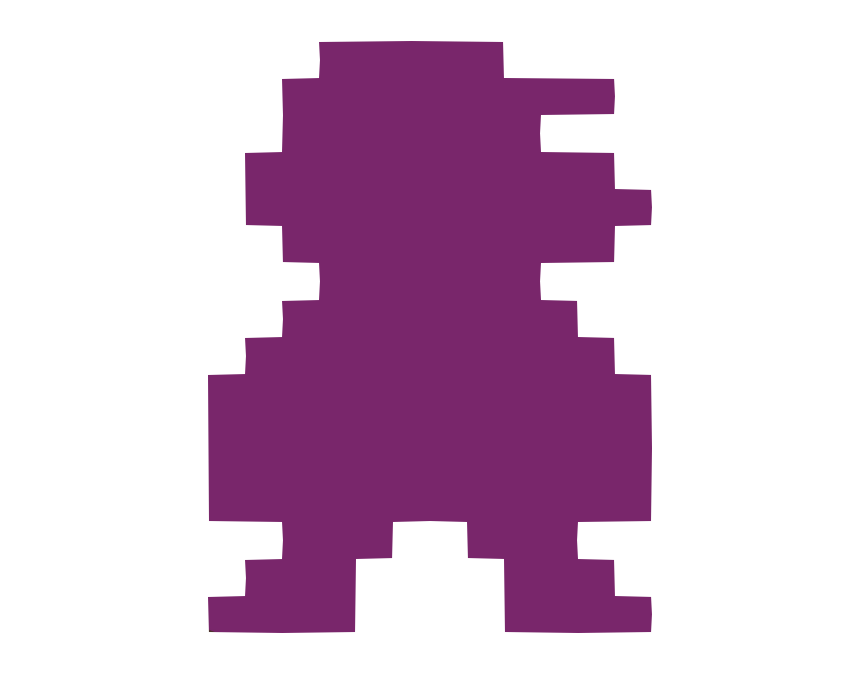
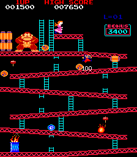
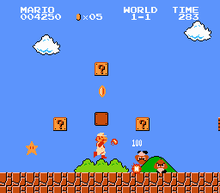

|
Games have |

Prominent Games Pac-Man (1980)


The 80s and the 90s was when games like Pac-Man and Mario were turning into the big names in the gaming and technology industries.
One of the pioneers of colorful games was Donkey Kong (1981). Colors such as the princess' pink dress to Mario's red overalls
and Donkey Kong's wide grin gave these characters their personalities and helped players get more involved in the stories.
|
If you have any comments or questions,
|